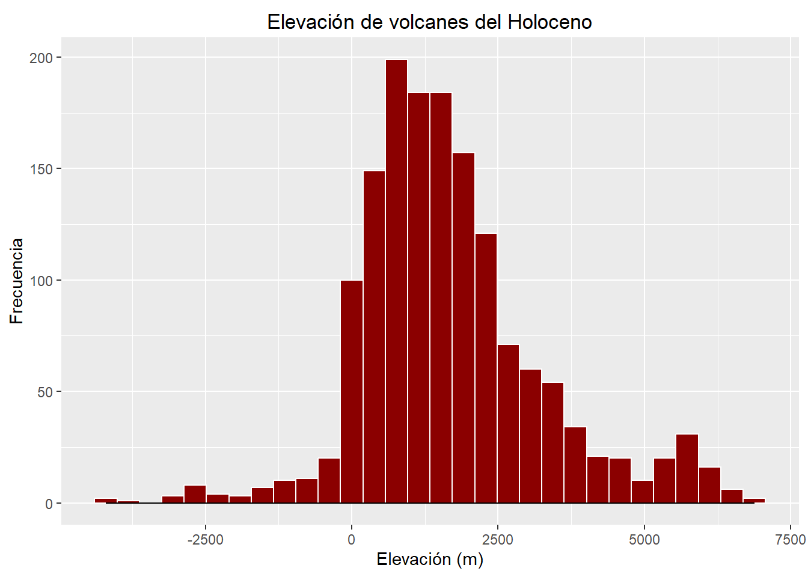
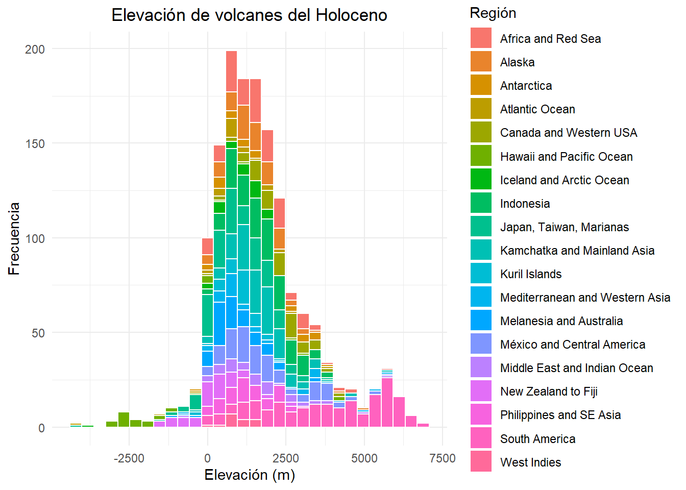
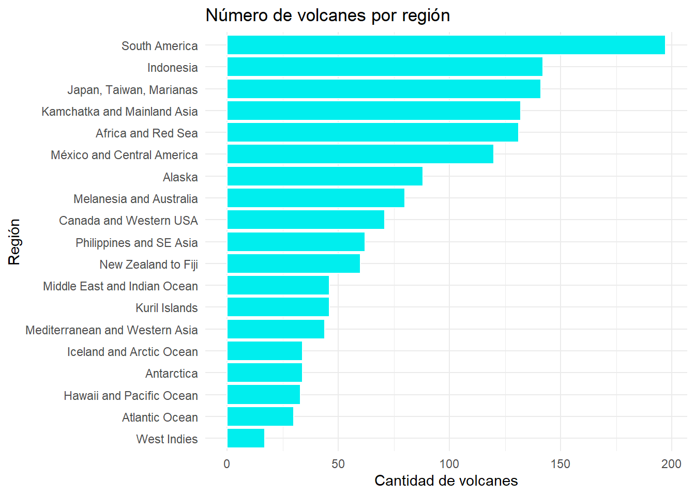
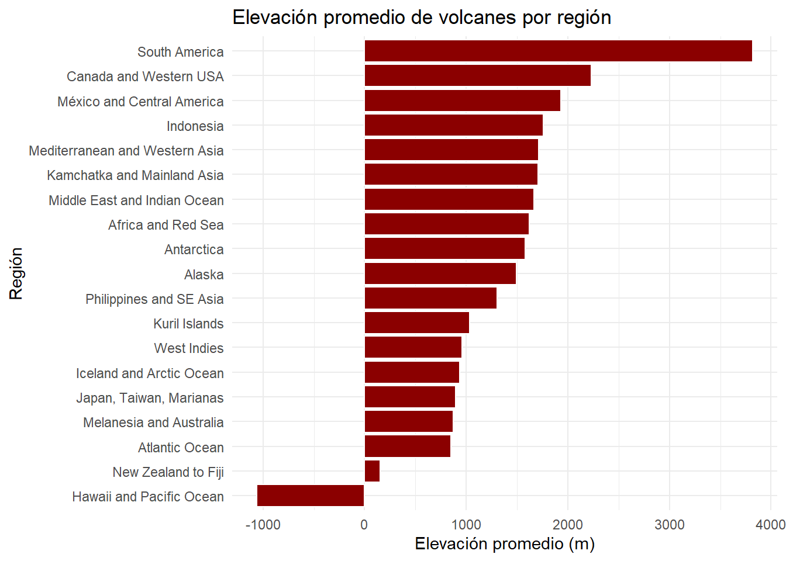
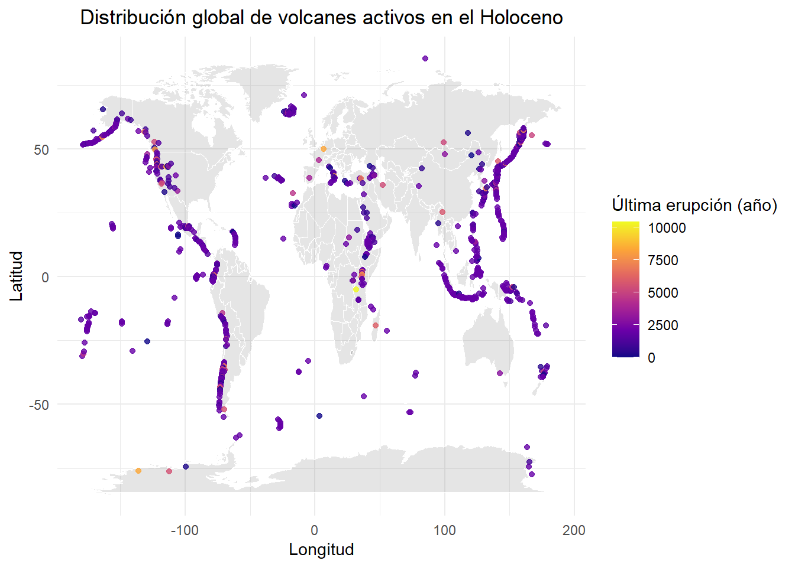
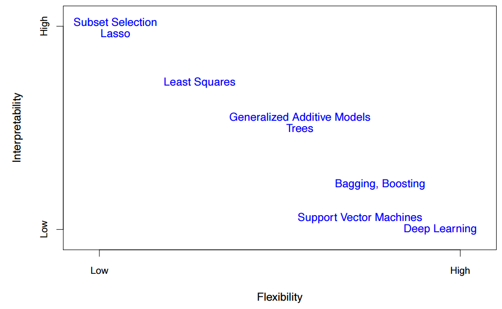

# Vamos a cargar algunos de los paquetes a usar
library(tidyverse)
library(ggplot2)
library(psych)
#install.packages(c("maps","mapview","sf"))
library(maps)
library(mapview)
library(sf)Módulo 2: Datos de volcanes, mapas y modelos estadísticos
Conjunto de datos: Erupciones volcánicas en el Holoceno
Exploración inicial de los datos
# Cargar el archivo CSV que contiene los datos de volcanes y convertir columnas de caracteres a factores
volcanes <- read.csv("datos/volcanes.csv") %>%
# La función mutate cambia, añade o quita columnas y sus valores
mutate(across(where(is.character), as.factor))
# Mostrar las primeras 6 filas del data frame para tener una vista preliminar
head(volcanes) Number Name Country Region
1 210010 West Eifel Volcanic Field Germany Mediterranean and Western Asia
2 210020 Chaine des Puys France Mediterranean and Western Asia
3 210030 Olot Volcanic Field Spain Mediterranean and Western Asia
4 210040 Calatrava Volcanic Field Spain Mediterranean and Western Asia
5 211001 Larderello Italy Mediterranean and Western Asia
6 211003 Vulsini Italy Mediterranean and Western Asia
Type Activity.Evidence Last.Known.Eruption Latitude Longitude
1 Maar(s) Eruption Dated 8300 BCE 50.170 6.85
2 Lava dome(s) Eruption Dated 4040 BCE 45.775 2.97
3 Pyroclastic cone(s) Evidence Credible Unknown 42.170 2.53
4 Pyroclastic cone(s) Eruption Dated 3600 BCE 38.870 -4.02
5 Explosion crater(s) Eruption Observed 1282 CE 43.250 10.87
6 Caldera Eruption Observed 104 BCE 42.600 11.93
Elevation..Meters. Dominant.Rock.Type
1 600 Foidite
2 1464 Basalt / Picro-Basalt
3 893 Trachybasalt / Tephrite Basanite
4 1117 Basalt / Picro-Basalt
5 500 No Data
6 800 Trachyte / Trachydacite
Tectonic.Setting
1 Rift Zone / Continental Crust (>25 km)
2 Rift Zone / Continental Crust (>25 km)
3 Intraplate / Continental Crust (>25 km)
4 Intraplate / Continental Crust (>25 km)
5 Subduction Zone / Continental Crust (>25 km)
6 Subduction Zone / Continental Crust (>25 km)#glimpse(volcanes)
# Mostrar la estructura del data frame: tipos de columnas, clases de datos y ejemplos de valores
str(volcanes) 'data.frame': 1508 obs. of 12 variables:
$ Number : int 210010 210020 210030 210040 211001 211003 211004 211010 211020 211030 ...
$ Name : Factor w/ 1478 levels "Abu","Acamarachi",..: 1429 236 949 209 711 1418 274 215 1405 553 ...
$ Country : Factor w/ 100 levels "Algeria","Algeria-Niger",..: 43 41 85 85 53 53 53 53 53 53 ...
$ Region : Factor w/ 19 levels "Africa and Red Sea",..: 12 12 12 12 12 12 12 12 12 12 ...
$ Type : Factor w/ 33 levels "Caldera","Caldera(s)",..: 16 14 18 18 8 1 1 1 22 3 ...
$ Activity.Evidence : Factor w/ 7 levels "","Eruption Dated",..: 2 2 4 2 3 3 5 3 3 3 ...
$ Last.Known.Eruption: Factor w/ 399 levels "0 CE","1000 CE",..: 378 312 399 303 34 4 399 53 194 37 ...
$ Latitude : num 50.2 45.8 42.2 38.9 43.2 ...
$ Longitude : num 6.85 2.97 2.53 -4.02 10.87 ...
$ Elevation..Meters. : int 600 1464 893 1117 500 800 949 458 1281 789 ...
$ Dominant.Rock.Type : Factor w/ 12 levels "","Andesite / Basaltic Andesite",..: 5 3 11 3 6 12 5 12 7 12 ...
$ Tectonic.Setting : Factor w/ 12 levels "","Intraplate / Continental Crust (>25 km)",..: 5 5 2 2 8 8 8 8 8 8 ...# Resumen estadístico (mínimo, máximo, media, etc.) de la columna de elevación
summary(volcanes$Elevation..Meters.) Min. 1st Qu. Median Mean 3rd Qu. Max.
-4200.0 687.2 1464.0 1683.4 2352.2 6879.0 # Contar la cantidad de volcanes por tipo (columna 'Type'), ordenando de mayor a menor frecuencia
volcanes %>%
count(Type, sort = TRUE) Type n
1 Stratovolcano 597
2 Shield 129
3 Stratovolcano(es) 121
4 Submarine 116
5 Pyroclastic cone(s) 99
6 Volcanic field 88
7 Caldera 86
8 Complex 54
9 Lava dome(s) 38
10 Shield(s) 35
11 Pyroclastic cone 18
12 Fissure vent(s) 16
13 Compound 14
14 Maar(s) 13
15 Lava dome 12
16 Caldera(s) 11
17 Tuff cone(s) 9
18 Maar 8
19 Pyroclastic shield 8
20 Crater rows 6
21 Subglacial 6
22 Stratovolcano? 4
23 Lava cone 3
24 Tuff cone 3
25 Unknown 3
26 Explosion crater(s) 2
27 Fissure vent 2
28 Submarine(es) 2
29 Complex(es) 1
30 Cone(s) 1
31 Lava cone(s) 1
32 Tuff ring(s) 1
33 Volcanic field(s) 1Visualización de los datos
Vamos a visualizar algunos de los datos para entender su comportamiento, primero analicemos la elevación y veamos como se distribuyen por región.
# Histograma de elevación de volcanes
ggplot(volcanes, aes(x = Elevation..Meters.)) +
geom_histogram(bins = 30, fill = "darkred", color = "white") +
geom_density()+
labs(title = "Elevación de volcanes del Holoceno", x = "Elevación (m)", y = "Frecuencia") +
theme(plot.title = element_text(vjust = 0, hjust = 0.5))
# Analicemos el comportamiento de la elevación
describe(volcanes$Elevation..Meters.) vars n mean sd median trimmed mad min max range skew
X1 1 1508 1683.36 1571.1 1464 1553.34 1220.92 -4200 6879 11079 0.64
kurtosis se
X1 1.36 40.46Veamos la altura de los volcanes por región.
# Crear un histograma de elevaciones, coloreando las barras por región
ggplot(volcanes, aes(x = Elevation..Meters., fill = Region)) +
geom_histogram(bins = 30, color = "white") + # Barras con borde blanco
labs(
title = "Elevación de volcanes del Holoceno",
x = "Elevación (m)",
y = "Frecuencia",
fill = "Región"
) +
theme_minimal() +
theme(
plot.title = element_text(hjust = 0.5), # Centrar el título
legend.position = "right" # Ubicar la leyenda a la derecha
)
# Describir los datos por región imprime un resultado demasiado largo y no
# explica mucho viendolo así
#describeBy(x=volcanes$Elevation..Meters. , group = volcanes$Region)Manipulación y limpieza de los datos
Ejercicio
Haz una gráfica de barras de la cantidad de volcanes por región usando
geom_col().Encuentra cuáles son los volcanes con la mayor y menor elevación de todos.
Calcula el promedio de elevación por región y crea una gráfica de barras con ese dato.
Code
# 1. Gráfico de barras: cantidad de volcanes por región
#Esto se puede hacer de dos formas, usando pipes y creando el
#gráfico directamente o haciendo un dataframe con los valores filtrados
# Creando la variable conteo
conteo <- volcanes %>%
count(Region, sort = TRUE)
#conteo
# Usando pipes y graficando directamente
volcanes %>%
# Contamos por región
count(Region, sort = TRUE) %>% # Contar volcanes por región
# Creamos el diagrama de barras
ggplot(aes(x = fct_reorder(Region, n), y = n)) +
geom_col(fill = "cyan2", color= "white") +
coord_flip() + # Poner regiones en el eje Y para mejor lectura
labs(
title = "Número de volcanes por región",
x = "Región",
y = "Cantidad de volcanes"
) +
theme_minimal()
Code
# 2. Encontrar los volcanes con mayor y menor elevación
# Usando el operador pipe es mucho más facil hacer este tipo de busquedas
volcan_mas_alto <- volcanes %>%
filter(Elevation..Meters. == max(Elevation..Meters., na.rm = TRUE))
volcan_mas_bajo <- volcanes %>%
filter(Elevation..Meters. == min(Elevation..Meters., na.rm = TRUE))
# Mostrar resultados
volcan_mas_alto Number Name Country Region Type
1 355130 Ojos del Salado, Nevados Chile-Argentina South America Stratovolcano
Activity.Evidence Last.Known.Eruption Latitude Longitude Elevation..Meters.
1 Eruption Dated 750 CE -27.109 -68.541 6879
Dominant.Rock.Type Tectonic.Setting
1 Dacite Subduction Zone / Continental Crust (>25 km)Code
volcan_mas_bajo Number Name Country Region Type
1 381040 Pico Fracture Zone Undersea Features Atlantic Ocean Submarine
Activity.Evidence Last.Known.Eruption Latitude Longitude Elevation..Meters.
1 Eruption Observed 1865 CE 38.75 -38.08 -4200
Dominant.Rock.Type Tectonic.Setting
1 No Data Intraplate / Oceanic Crust (< 15 km)Code
# 3. Promedio de elevación por región + gráfico de barras
#igualmente tenmos las mismas dos opciones para esto
elev_promedio <- volcanes %>%
group_by(Region) %>%
summarise(promedio_elev = mean(Elevation..Meters., na.rm = TRUE))
elev_promedio# A tibble: 19 × 2
Region promedio_elev
<fct> <dbl>
1 Africa and Red Sea 1621
2 Alaska 1491.
3 Antarctica 1583.
4 Atlantic Ocean 851.
5 Canada and Western USA 2229.
6 Hawaii and Pacific Ocean -1062.
7 Iceland and Arctic Ocean 934.
8 Indonesia 1759.
9 Japan, Taiwan, Marianas 894.
10 Kamchatka and Mainland Asia 1704.
11 Kuril Islands 1035.
12 Mediterranean and Western Asia 1714
13 Melanesia and Australia 875.
14 México and Central America 1933.
15 Middle East and Indian Ocean 1664.
16 New Zealand to Fiji 152.
17 Philippines and SE Asia 1304.
18 South America 3816.
19 West Indies 960.Code
volcanes %>%
group_by(Region) %>%
summarise(promedio_elev = mean(Elevation..Meters., na.rm = TRUE)) %>%
ggplot(aes(x = fct_reorder(Region, promedio_elev), y = promedio_elev)) +
geom_col(fill = "darkred", color= "white") +
coord_flip() +
labs(
title = "Elevación promedio de volcanes por región",
x = "Región",
y = "Elevación promedio (m)"
) +
theme_minimal()
Manipulemos los datos de edad para pasar de factores a valores númericos, así poder usarlos como datos “continuos” y calcular sus caracteristicas.
# Crear una nueva columna numérica para la última erupción
volcanes <- volcanes %>%
mutate(
# Reemplazar "BCE" por valores negativos y "CE" por positivos
Eruption_Year = case_when(
# str_detect es como select pero para texto
str_detect(Last.Known.Eruption, "BCE") ~
as.integer(str_remove(Last.Known.Eruption, " BCE")),
str_detect(Last.Known.Eruption, "CE") ~
as.integer(str_remove(Last.Known.Eruption, " CE")),
Last.Known.Eruption == "Unknown" ~ NA_integer_,
TRUE ~ NA_integer_
)
)Warning: There were 2 warnings in `mutate()`.
The first warning was:
ℹ In argument: `Eruption_Year = case_when(...)`.
Caused by warning:
! NAs introducidos por coerción
ℹ Run `dplyr::last_dplyr_warnings()` to see the 1 remaining warning.# Verificar resultados
#volcanes %>%
# select(Last.Known.Eruption, Eruption_Year) %>%
# distinct()Creación de mapas
Ahora podemos graficar los datos en un mapa, en R hay muchas dormas y paquetes que permiten hacer mapas, nosotros usaremos el paquete maps.
# Obtener coordenadas del mapa mundial
world_map <- map_data("world")
# Crear el mapa con ggplot
ggplot() +
# Dibujar el mapa base del mundo
geom_map(
data = world_map, map = world_map,
aes(long, lat, map_id = region),
color = "white", fill = "gray50", size = 0.05, alpha = 0.2
) +
# Agregar los volcanes como puntos (solo los que tienen año conocido)
geom_point(
data = volcanes %>% filter(!is.na(Eruption_Year)), # Eliminar filas con NA
aes(x = Longitude, y = Latitude, color = Eruption_Year),
alpha = 0.8, linewidth = 2
) +
# Escala de colores perceptualmente uniforme
scale_color_viridis_c(option = "plasma") +
# Etiquetas y título
labs(
title = "Distribución global de volcanes activos en el Holoceno",
x = "Longitud",
y = "Latitud",
color = "Última erupción (año)"
) +
theme_minimal()+
theme(
plot.title = element_text(hjust = 0.5), # Centrar el título
plot.subtitle = element_text(hjust = 0.5)
)
Ejercicio
Crea un mapa en donde solo se vea Sudamérica (longitud: -90, -30; latitud:-60, 15) y guardalo como pdf o svg.
Puedes hacerlo solo limitando la vista del mapa o también filtrando los valores
Code
# Filtrar volcanes en Sudamérica (rango aproximado)
volcanes_sud <- volcanes %>%
filter(Latitude >= -60, Latitude <= 15,
Longitude >= -90, Longitude <= -30,
!is.na(Eruption_Year))
# Mapa centrado en Sudamérica con solo volcanes de la región
mapa_volcanes_sud<- ggplot() +
geom_polygon(
data = world_map,
aes(x = long, y = lat, group = group),
fill = "gray95", color = "white"
) +
geom_point(
data = volcanes_sud,
aes(x = Longitude, y = Latitude, color = Eruption_Year),
size = 2, alpha = 0.8
) +
scale_color_viridis_c(option = "plasma") +
# Solo con añadir este comando al mapa anterior sería suficiente
# pero filtrar los datos hace que sea mucho más eficiente
coord_quickmap(xlim = c(-90, -30), ylim = c(-60, 15)) +
labs(
title = "Volcanes en Sudamérica",
x = "Longitud", y = "Latitud",
color = "Última erupción (año)"
) +
theme_minimal()
#ggsave("mapa_volcanes_Sudamerica.pdf", mapa_volcanes_sud)Ahora hagamos un mapa interactivo usando las librerias sf y mapview
Modelos estadísticos y aprendizaje estadístico
Introducción a los Modelos Estadísticos y el Aprendizaje Estadístico
Antes de sumergirnos en modelos específicos como el lineal, es crucial entender el marco general de los modelos estadísticos y el aprendizaje estadístico. En esencia, ambos buscan lo mismo: comprender y predecir patrones en los datos.
Un modelo estadístico es una representación matemática simplificada de la realidad. Nos ayuda a entender cómo una o más variables predictoras (también llamadas independientes) influyen en una variable de respuesta (o dependiente). Estos modelos se basan en supuestos sobre la distribución de los datos y las relaciones entre las variables, permitiéndonos inferir propiedades de una población a partir de una muestra. Por ejemplo, podríamos querer modelar cómo la temperatura global influye en el tamaño corporal promedio de una especie fósil a lo largo del tiempo geológico.
El aprendizaje estadístico es un campo más amplio que utiliza una variedad de técnicas, algunas de las cuales son modelos estadísticos, para “aprender” de los datos. Su objetivo principal es hacer predicciones precisas o descubrir patrones ocultos. En paleontología, esto podría implicar entrenar un algoritmo para clasificar automáticamente fósiles según su morfología o para predecir la edad de una muestra o estrato basándose en la composición de su microfauna.
Recursos para profundizar
Para aprender en profundidad sobre como producir modelos estadísticos con R Tidy Modeling with R
Para aprender sobre aprendizaje estadístico con ejemplos en R y Python An Introduction to Statistical Learning
Métodos del Aprendizaje Estadístico: Un Espectro de Flexibilidad
Existen dos tipos principales de problemas en el aprendizaje estadístico:
- Aprendizaje Supervisado: Se utiliza cuando tenemos una variable de respuesta conocida y queremos predecirla basándonos en variables predictoras. Los métodos aprenden una relación mapeando las variables de entrada a la variable de salida.
- **Regresión**: La variable de respuesta es cuantitativa (numérica continua). Ejemplos incluyen el **Modelo Lineal (LM)**, la regresión polinómica, las máquinas de soporte vectorial para regresión, y los árboles de regresión.
- **Clasificación**: La variable de respuesta es cualitativa (categórica). Ejemplos son la regresión logística, los clasificadores de Bayes, las máquinas de soporte vectorial para clasificación, y los árboles de decisión.- Aprendizaje No Supervisado: Se emplea cuando no tenemos una variable de respuesta específica. El objetivo es encontrar patrones o estructuras ocultas dentro de los datos por sí mismos.
- **Clustering (Agrupamiento)**: Como vimos, agrupa observaciones similares en conglomerados. Esencial para la taxonomía numérica o la identificación de paleocomunidades.
- **Reducción de Dimensionalidad**: Técnicas como el **Análisis de Componentes Principales (PCA)** y el **Análisis de Correspondencias (CA/MCA)**, que buscan simplificar la complejidad de los datos al reducir el número de variables manteniendo la mayor cantidad de información posible.Flexibilidad vs Interpretabilidad

(Tomado de: An Introduction to Statistical Learning with Applications in R Second Edition, James, et al.)
Una consideración fundamental en el aprendizaje estadístico es la relación inversa entre la flexibilidad de un método y su interpretabilidad:
Flexibilidad: Se refiere a la capacidad de un método para ajustarse a una amplia gama de formas de datos, incluso relaciones no lineales complejas. Los métodos más flexibles pueden capturar patrones más intrincados en los datos, lo que a menudo lleva a una mayor precisión predictiva.
Interpretabilidad: Se refiere a la facilidad con la que podemos entender cómo funciona un modelo y cómo las variables predictoras influyen en la variable de respuesta. Es decir, qué tan fácil es extraer insights y explicaciones claras del modelo.
Generalmente, a medida que un método se vuelve más flexible, su interpretabilidad disminuye.
Modelos Menos Flexibles (Mayor Interpretabilidad): El Modelo Lineal (LM) es un excelente ejemplo. Es relativamente simple y sus coeficientes tienen una interpretación directa (cambio en \(Y\) por cada unidad de cambio en \(X\)). Esto lo hace muy útil cuando el objetivo es comprender la naturaleza de la relación. Sin embargo, no puede capturar relaciones no lineales complejas.
Modelos Más Flexibles (Menor Interpretabilidad): Métodos como las redes neuronales o los bosques aleatorios son mucho más flexibles y pueden modelar relaciones altamente no lineales y complejas en los datos, lo que a menudo resulta en una mayor precisión predictiva. Sin embargo, es mucho más difícil entender por qué hacen una predicción particular o cómo las variables individuales contribuyen a la salida, lo que a veces los denomina “cajas negras”.
La elección del método dependerá de nuestro objetivo: ¿necesitamos la máxima precisión predictiva (flexibilidad), o es más importante entender la relación subyacente y la influencia de variables específicas (interpretabilidad)? A menudo, un enfoque combinado, usando modelos interpretables para la exploración inicial y modelos más flexibles para predicciones de alta precisión, es la estrategia más efectiva.
Modelo Lineal (LM): Comprendiendo Relaciones
El Modelo Lineal (LM por sus siglas en inglés, Linear Model), a menudo conocido como Regresión Lineal Simple cuando hay una sola variable predictora, es una de las técnicas estadísticas más utilizadas y fundamentales. Permite modelar la relación lineal entre una variable de respuesta (o dependiente) y una o más variables predictoras (o independientes). Su objetivo principal es predecir el valor de la variable dependiente basándose en los valores de las variables independientes.
¿Qué es un Modelo Lineal?
La forma más básica de un modelo lineal es la de una línea recta, que se puede expresar matemáticamente como:
\[Y = \beta_0 + \beta_1 X + \epsilon\]
Donde:
\(Y\) es la variable de respuesta (o dependiente), el valor que queremos predecir o explicar.
\(X\) es la variable predictora (o independiente), el valor que usamos para predecir \(Y\). En modelos lineales múltiples, puede haber múltiples variables \(X\).
\(\beta_0\) es el intercepto (o coeficiente de intercepción), que representa el valor esperado de \(Y\) cuando \(X\) es igual a 0.
\(\beta_1\) es el coeficiente de la pendiente (o coeficiente de regresión), que indica cuánto cambia el valor esperado de \(Y\) por cada unidad de aumento en \(X\).
\(\epsilon\) (épsilon) es el término de error o residual, que representa la variabilidad en \(Y\) que no puede ser explicada por \(X\). Se asume que estos errores son aleatorios, independientes, normalmente distribuidos y con varianza constante (homocedasticidad).
Cuando tenemos múltiples variables predictoras, el modelo se extiende a:
\[Y = \beta_0 + \beta_1 X_1 + \beta_2 X_2 + \dots + \beta_k X_k + \epsilon\]
Donde \(X_1 + X_2 + \dots + X_k\) son las diferentes variables predictoras y \(\beta_1 + \beta_2 + \dots + \beta_k\) son sus respectivos coeficientes.
¿Cómo se leen los resultados de un Modelo Lineal?
Al ejecutar un modelo lineal en un software estadístico (como R o Python), los resultados típicos que obtendrás son:
- Estimaciones de los Coeficientes (\(\beta_0, \beta_1 , \dots , \beta_k\)):
Intercepto (\(\beta_0\)): Nos dice el valor promedio de la variable de respuesta cuando todas las variables predictoras son 0. Su interpretación puede ser directa o no, dependiendo si el 0 es un valor significativo para las variables predictoras.
Coeficientes de las Predictoras \(\beta_1 , \dots , \beta_k\)): Cada coeficiente \(\beta_i\) indica el cambio promedio en la variable de respuesta Y por cada unidad de aumento en la variable predictora \(X_i\), manteniendo constantes las otras variables predictoras en el modelo.
Error Estándar de los Coeficientes: Mide la precisión de la estimación de cada coeficiente. Un error estándar pequeño indica una estimación más precisa.
Valor \(t\) (o Estadística t): Es el cociente entre el coeficiente estimado y su error estándar. Se utiliza para probar la hipótesis nula de que el coeficiente es igual a cero (es decir, que la variable predictora no tiene un efecto lineal significativo sobre la variable de respuesta).
Valor \(p\) (o \(Pr(>|t|)\)): Es la probabilidad de observar un valor t tan extremo (o más extremo) como el calculado, asumiendo que la hipótesis nula es verdadera.
Si el valor \(p\) es pequeño (típicamente menor que un nivel de significancia \(\alpha\), por ejemplo, 0.05), se rechaza la hipótesis nula. Esto sugiere que el coeficiente es estadísticamente significativo, y la variable predictora tiene un efecto lineal sobre la variable de respuesta.
Si el valor \(p\) es grande, no se rechaza la hipótesis nula, indicando que no hay evidencia suficiente para decir que la variable predictora tiene un efecto lineal significativo.
- \(R^2\) (Coeficiente de Determinación):
El \(R^2\) es un valor entre 0 y 1 que indica la proporción de la varianza total de la variable de respuesta que es explicada por el modelo lineal.
Un \(R^2\) de 0.70 significa que el 70% de la variabilidad en \(Y\) puede ser explicada por las variables predictoras del modelo.
Un \(R^2\) más alto generalmente indica un mejor ajuste del modelo a los datos, aunque no necesariamente implica que el modelo sea “bueno” para la predicción o que capture la verdadera relación causal.
\(R^2\) Ajustado: Similar al \(R^2\), pero penaliza la inclusión de variables predictoras que no contribuyen significativamente a la explicación de la varianza.
- Estadística \(F\) y su Valor \(p\):
La estadística \(F\) y su valor \(p\) asociado evalúan la significancia global del modelo. Prueban la hipótesis nula de que todos los coeficientes de las variables predictoras (excepto el intercepto) son simultáneamente cero.
Un valor \(p\) pequeño para la estadística \(F\) (usualmente menor que 0.05) sugiere que el modelo en su conjunto es estadísticamente significativo, es decir, que al menos una de las variables predictoras tiene un efecto significativo sobre Y.
En resumen, los modelos lineales son una herramienta poderosa y relativamente fácil de interpretar para explorar y cuantificar relaciones lineales entre variables, lo que los convierte en un pilar del análisis de datos.